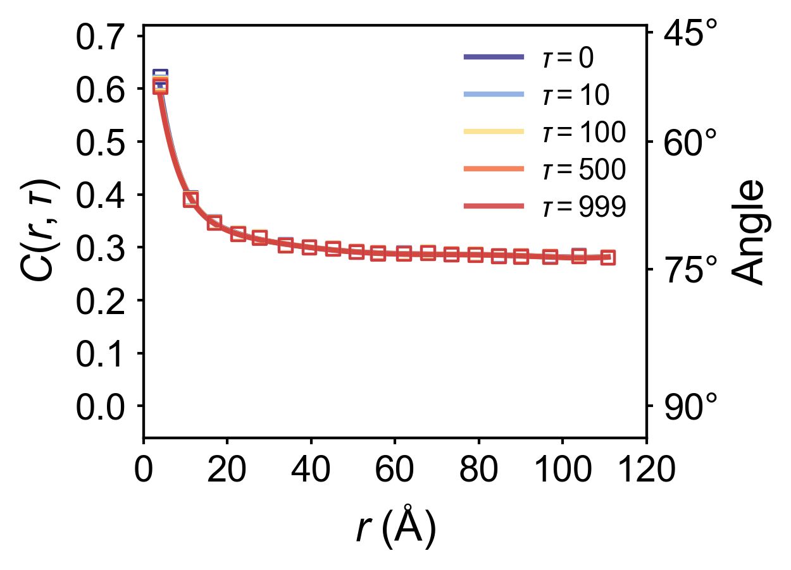

where \(\tau\) is the time delay, \(N\) represents the MD simulation time, \(\bm{P}_i(t)\) denotes the instantaneous polarization of unit cell \(i\) at timestep \(t\), and \(N_p(r)\) counts the number of pairs where unit cells \(i\) and \(j\) are separated by distance \(\|\bm{r}_{ij}\| = r\). For simplicity, the distance between two nearest-neighbor unit cells is defined as \(1\).
Physically, \(C(r,\tau)\) quantifies the spatiotemporal correlation between arbitrary pairs of unit cells (or dipoles) separated by distance \(r\) with time delay \(\tau\). The average angular deviation between such pairs can be obtained via \(\arccos{C(r,\tau)}\).
Before start to calculate the correlation function, make sure you have already finished the polarization calculation and saved as .npy format with \((T,N,3)\) shape, here \(N\) is the number of unitcells and \(T\) is the total timesteps of MD trajectory, 3 indicates the polarization along three axis. Here is a quick tutorial to calculate the polarization:
Important: the following steps are only used for perovskite structures !!!
Given a configuration from MD simulations,
the polarization for ABO3 perovskite systems can be estimated using the following formula,
where \(\mathbf{P}^m(t)\) is the polarization of unit cell \(m\) at time \(t\), \(V_{\rm uc}\) is the volume of the unit cell, \(\mathbf{Z}_{A}^*, \mathbf{Z}_{B}^*\), and \(\mathbf{Z}_{\mathrm{O}}^*\) are the average Born effective charges of A site, B site and O atoms, \(\mathbf{r}_{A, i}^m(t), \mathbf{r}_{B, i}^m(t)\), and \(\mathbf{r}_{\mathrm{O}, i}^m(t)\) are the instantaneous atomic positions.
To calculate the polarization on our group cluster, you should load the environment path:
Taking Pb(In½Nb½)O3-Pb(Mg⅓Nb⅔)O3-PbTiO3 (PIN-PMN-PT) as an example, which has 4 different element on B site. We use the following script get_neighbor.py to calculate the neighborlist for each A and B site atom.
#usage: python get_neighbor.py <trajectory file>fromferrodispcalcimportNeighborListfromferrodispcalc.type_mapimportUniPeroimportsys#Center atom: B site, neighbour atom: A sitefile_name=sys.argv[1]nl_ba=NeighborList(file_name,format='lmp-dump',type_map=UniPero)nl_ba.build(center_elements=['Ti','Mg','Nb','In'],neighbor_elements=['Pb'],neighbor_num=8,cutoff=5,defect=False)nl_ba.nl-=1nl_ba.write('BA.dat')#Center atom: O, neighbour atom: B sitenl_bo=NeighborList(file_name,format='lmp-dump',type_map=UniPero)nl_bo.build(center_elements=['Ti','Mg','Nb','In'],neighbor_elements=['O'],neighbor_num=6,cutoff=5,defect=False)nl_bo.nl-=1nl_bo.write('BO.dat')#Center atom: O site, neighbour atom: A sitenl_ao=NeighborList(file_name,format='lmp-dump',type_map=UniPero)nl_ao.build(center_elements=['Pb'],neighbor_elements=['O'],neighbor_num=12,cutoff=5,defect=False)nl_ao.nl-=1nl_ao.write('AO.dat')
For different ABO3 strcutures, you have to change the center_elements and neighbor_elements list on the script above. Moreover, for different configurations with the same ABO3 formula, you also have to calculate the neighborlist separately.
here type_map_file is the typemap for your MD potential, for UniPero (version 2025.3), this typemap is
Ba,Pb,Ca,Sr,Bi,K,Na,Hf,Ti,Zr,Nb,Mg,In,Zn,O
the bec_file includes the born effective charge for each element, and it has the same sequence as type_map_file, you can obtain these values via papers or DFT calculations. Here is an example for PIN-PMN-PT solid solution:
#usage: python polar2npy.py <polarization_file> <output_file (.npy format)> <total_unitcell_number>importnumpyasnpimportsysinput_name=sys.argv[1]output_name=sys.argv[2]natom=int(sys.argv[3])data=np.loadtxt(input_name)ndata=data.shape[0]nframe=ndata//natomifndata%natom!=0:print("Error: the number of data is not a multiple of natom")sys.exit(1)data=data.reshape(nframe,natom,3)np.save(output_name,data)
And I also highly recommend to calculate the time-dependent polarization via the following script pt.py, which is really helpful for other calculations.
We use the following script cal_spatial_correlation.py with a GPU cluster to calculate the correlation function.
Important notes:
- The input file must be in .npy format
- <uc_x>, <uc_y>, and <uc_z> represent the supercell dimensions along the three axes
- <max_tau> specifies the maximum time delay for correlation function calculation (the script will compute values for \(\tau\) ranging from 0 to <max_tau>)
- This script must be executed on a GPU cluster. You need to specify the number of GPUs in your sbatch submission script.
importpandasaspdimportmatplotlib.pyplotaspltfromscipy.signalimportsavgol_filterimportnumpyasnpfromscipy.interpolateimportinterp1d,UnivariateSplinefrommatplotlibimportrcParamsplt.style.use('nature.mplstyle')FIGURE_SIZE=(4,3)FONT_SIZE=15LINE_WIDTH=3AXIS_LABELS={'x':'$r$ (Å)','y':r'$C(r,\tau)$'}LEGEND_POS='upper right'custom_colors=['#403990','#80A6E2','#FBDD85','#F46F43','#CF3D3E']color_dict={tau:colorfortau,colorinzip([0,10,100,500,999],custom_colors)}df=pd.read_csv('spatial_a_disp_correlation_standard.txt',sep='\s+',header=None,names=['tau','r','C'])target_taus=[0,10,100,500,999]filtered_df=df[df['tau'].isin(target_taus)]fig,ax=plt.subplots(figsize=FIGURE_SIZE)ax2=ax.twinx()angle_ticks=[45,60,75,90]cosine_vals=[np.cos(np.deg2rad(ang))foranginangle_ticks]ax2.set_yticks(cosine_vals)ax2.set_yticklabels([f'{ang}°'foranginangle_ticks])ax2.set_ylabel('Angle',fontsize=FONT_SIZE+1,labelpad=5)ax2.set_ylim(-0.06,0.72)deffilter_close_points(r_values):filtered=[]prev=Nonefori,rinenumerate(r_values):ifprevisnotNoneandabs(r-prev)<5:continuefiltered.append(i)prev=rreturnfiltered# Function to smooth data (similar to reference script)defsmooth_data(r_values,c_values,method='spline',k=5,s=0.001):x_fine=np.linspace(min(r_values),max(r_values),500)try:spline=UnivariateSpline(r_values,c_values,k=k,s=s)y_smooth=spline(x_fine)returnx_fine,y_smoothexceptException:interpolator=interp1d(r_values,c_values,kind='linear',fill_value="extrapolate")returnx_fine,interpolator(x_fine)legend_handles=[]fortauintarget_taus:tau_data=filtered_df[filtered_df['tau']==tau].sort_values('r')iftau_data.empty:continuer_values=tau_data['r'].values*4c_values=tau_data['C'].valuescolor=color_dict[tau]idx=filter_close_points(r_values)ax.scatter(r_values[idx],c_values[idx],s=25,color=color,alpha=1.0,linewidths=1.0,marker='s',facecolors='none',edgecolors=color,zorder=3)x_smooth,y_smooth=smooth_data(r_values,c_values)curve,=ax.plot(x_smooth,y_smooth,lw=LINE_WIDTH-1,color=color,alpha=0.85,label=fr'$\tau = {tau}$',zorder=2)legend_handles.append(curve)ax.set_xlim(0,120)ax.set_xticks([0,20,40,60,80,100,120])ax.set_ylim(-0.06,0.72)ax.set_yticks([0,0.1,0.2,0.3,0.4,0.5,0.6,0.7])ax.set_yticklabels([f"{t:.1f}"fortin[0,0.1,0.2,0.3,0.4,0.5,0.6,0.7]])ax.set_xlabel(AXIS_LABELS['x'],fontsize=FONT_SIZE+1,labelpad=5)ax.set_ylabel(AXIS_LABELS['y'],fontsize=FONT_SIZE+1,labelpad=5)ax.tick_params(axis='both',which='major',labelsize=FONT_SIZE-1,pad=4)ax2.tick_params(axis='y',which='major',labelsize=FONT_SIZE-1,pad=4)leg=ax.legend(handles=legend_handles,loc=LEGEND_POS,frameon=False,fontsize=FONT_SIZE-4,handlelength=2.5)leg.get_frame().set_edgecolor('0.8')plt.tight_layout()plt.subplots_adjust(right=0.85)plt.savefig('C_vs_r_p.png',dpi=300,bbox_inches='tight')plt.show()

Or you can average all \(\tau\) values into \(C(r)\), which is defined by
\(\(C(r)=\int C(r,\tau) d\tau\)\)
importnumpyasnpimportpandasaspdimportmatplotlib.pyplotaspltfromscipy.interpolateimportinterp1d,UnivariateSplinefrommatplotlib.colorsimportLinearSegmentedColormapfrommatplotlibimportrcParamsimportwarningswarnings.filterwarnings('ignore',category=UserWarning)plt.style.use('nature.mplstyle')INPUT_DIRS=['100','200','250','300','400']OUTPUT_FILE="correlation_r_a.txt"#Correlation function result custom_colors=['#403990','#80A6E2','#FBDD85','#F46F43','#CF3D3E']color_dict={int(temp):colorfortemp,colorinzip(INPUT_DIRS,custom_colors)}FIGURE_SIZE=(4,3)FONT_SIZE=15LINE_WIDTH=3AXIS_LABELS={'x':'$r$ (Å)','y':'r$C(r,\overline{\tau})$'}LEGEND_POS='upper right'defprocess_data():all_data=[]fortemp_dirinINPUT_DIRS:file_path=os.path.join(temp_dir,"spatial_a_disp_correlation_standard.txt")df=pd.read_csv(file_path,sep='\t',header=None,names=['tau','r','C'],dtype={'r':float,'C':float})mean_df=df.groupby('r')['C'].mean().reset_index()mean_df['temp']=int(temp_dir)all_data.append(mean_df)ifnotall_data:returnpd.DataFrame()final_df=pd.concat(all_data,ignore_index=True)final_df.to_csv(OUTPUT_FILE,sep='\t',index=False,columns=['temp','r','C'],header=['Temperature (K)','r','⟨C⟩'])returnfinal_dfdefsmooth_data(r_values,c_values,method='spline',k=5,s=0.001):x_fine=np.linspace(min(r_values),max(r_values),500)try:spline=UnivariateSpline(r_values,c_values,k=k,s=s)y_smooth=spline(x_fine)returnx_fine,y_smoothexceptException:interpolator=interp1d(r_values,c_values,kind='linear',fill_value="extrapolate")returnx_fine,interpolator(x_fine)deffilter_close_points(r_values):filtered=[]prev=Nonefori,rinenumerate(r_values):ifprevisnotNoneandabs(r-prev)<5:continuefiltered.append(i)prev=rreturnfiltereddefplot_results(df):plt.figure(figsize=FIGURE_SIZE)ax=plt.gca()ax2=ax.twinx()angle_ticks=[45,60,75,90]cosine_vals=[np.cos(np.deg2rad(ang))foranginangle_ticks]ax2.set_yticks(cosine_vals)ax2.set_yticklabels([f'{ang}°'foranginangle_ticks])ax2.set_ylabel('Angle',fontsize=FONT_SIZE+1,labelpad=5)legend_handles=[]fortempinnp.sort(df['Temperature (K)'].unique()):temp_data=df[df['Temperature (K)']==temp].sort_values('r')color=color_dict[temp]r_values=temp_data['r'].values*4c_values=temp_data['⟨C⟩'].valuesidx=filter_close_points(r_values)plt.scatter(r_values[idx],c_values[idx],s=25,color=color,alpha=1.0,linewidths=1.0,marker='s',facecolors='none',edgecolors=color,zorder=3)x_smooth,y_smooth=smooth_data(r_values,c_values,method='spline')curve,=plt.plot(x_smooth,y_smooth,lw=LINE_WIDTH-1,color=color,alpha=0.85,label=f"{temp} K",zorder=2)legend_handles.append(curve)ax.set_xlim(0,120)x_ticks=[0,20,40,60,80,100,120]ax.set_xticks(x_ticks)ax.set_ylim(-0.06,0.72)ax.set_xlabel(AXIS_LABELS['x'],fontsize=FONT_SIZE+1,labelpad=5)ax.set_ylabel(r'$C^{\text{d}}(r)$',fontsize=FONT_SIZE+1,labelpad=5)y_ticks=[0,0.1,0.2,0.3,0.4,0.5,0.6,0.7]ax.set_yticks(y_ticks)ax.set_yticklabels([f"{t:.1f}"fortiny_ticks])ax2.set_ylim(-0.06,0.72)ax.tick_params(axis='both',which='major',labelsize=FONT_SIZE-1,pad=4)ax2.tick_params(axis='y',which='major',labelsize=FONT_SIZE-1,pad=4)leg=ax.legend(handles=legend_handles,loc=LEGEND_POS,frameon=False,fontsize=FONT_SIZE-4,handlelength=2.5)leg.get_frame().set_edgecolor('0.8')plt.tight_layout()plt.subplots_adjust(right=0.85)plt.savefig("a_disp_correlation.png",dpi=300,bbox_inches='tight')plt.close()if__name__=="__main__":df=process_data()plot_df=pd.read_csv(OUTPUT_FILE,sep='\t')plot_results(plot_df)